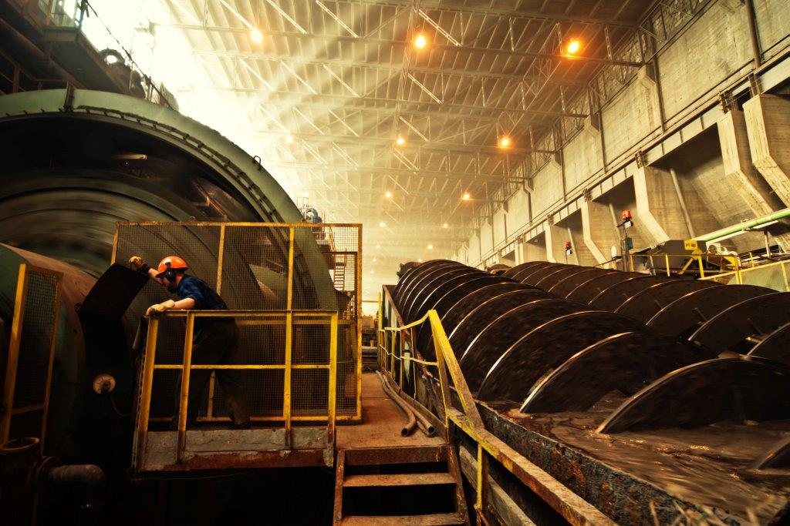

Dokumentacja której szukasz nie występuje w formie cyfrowej, ale powinna być w formie papierowej. Schematy od danej dokumentacji można znaleść w 3 miejscach:
1.
Na dyżurka elektryków TEP, na młynowni lub rozdrabialni, znajduje się szafa z dokumentacją elektryczną. Jeśli firma oddała więcej kopii to cała dokumentacja czyli schematy, pomiary, kosztorysy, DTR, itd. będzie znajdować się w szafie, jeśli nie to tylko wybrane schematy.
2.
Sztygarówka elektryków TEP to kolejne miejsce gdzie można znaleść brakującą dokumentacje. Podobnie jak na dyżurce, dokumentacja powinna znajdować się w szafie, i albo będzie to pełna dokumentacja lub tylko wybrane schematy.
3.
Jeżeli nie możemy znaleść dokumentacji na dyżurce i sztygarówce, ostatnim miejscem jest biuro techniczne oddziału TEP. Tam musi znajdować się orginał dokumentacji powykonawczej odebrany zaraz po odbiorze ostatecznym maszyny/rozdzielni.